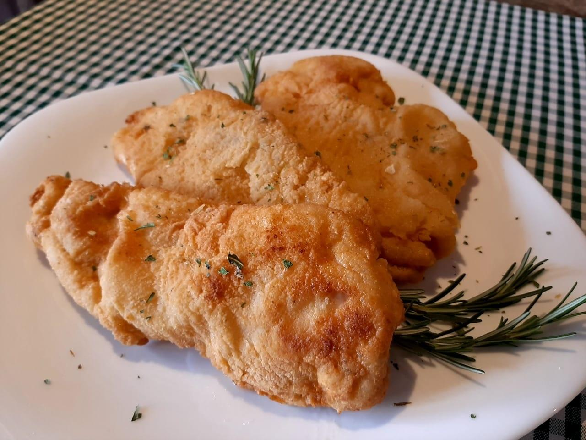

Chiken In Breadcrumbs

Description
In this recipe you will learn how to make chiken in breadcrumbs, a delicious food that I risk saying it's my favourite.
Ingredients
- chiken stripes(or your preferent cut);
- 1 egg;
- breadcrumbs;
- kitchen oil.
Steps
- crack an egg in a plate and mix it up;
- get a chicken strip and bathe it the mixed egg;
- roll the chicken strip in a plate full of breadcrumbs;
- fill the botton of a pan with kitchen oil;
- heat up the pan until you feel like the oil is ready for the chicken;
- put the chicken strip in the oil, you will know it's ready because it makes a lot of noise a spills oil, so take care;
- wait until the chicken gets the right color, and take it off the oil;
- let it rest for some seconds and voila, your your chicken in breadcrumbs ready to be eaten!!